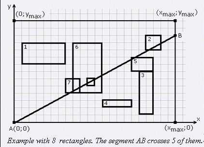

F.A.Qs
Home
Discuss
ProblemSet
Status
Ranklist
Contest
入门OJ
ModifyUser
Xeonacid
Logout
捐赠本站
Notice:
注册本OJ方式请见https://www.lydsy.com/JudgeOnline/wttl/thread.php?tid=5671
Problem 1256. -- Baltic2004Rectangles
1256: Baltic2004Rectangles
Time Limit:
1 Sec
Memory Limit:
162 MB
Submit:
87
Solved:
19
[
Submit
][
Status
][
Discuss
]
Description
平面上有N个矩形，矩形的边与坐标轴平行。这些矩形之间可以相交或覆盖。每个矩形的顶点都是非负整数，并且横坐标不超过xmax，纵坐标不超过ymax。现在你要寻找一个点B，点B为整点并在线段[(0, ymax), (xmax, ymax)]或[(xmax, 0), (xmax, ymax)]上，并且它与(0,0)的连线段与尽量多的矩形相交。如果两个几何图形有公共点，我们就认为它们相交。
Input
输入文件第一行是整数xmax,ymax和N。此后N行，每行描述一个矩形，是矩形左下脚与右上角的坐标。
Output
输出文件仅有一行，为与矩形相交的最大数目。
Sample Input
22 14 8
1 8 7 11
18 10 20 12
17 1 19 7
12 2 16 3
16 7 19 9
8 4 12 11
7 4 9 6
10 5 11 6
Sample Output
5

HINT
对于100%的数据，有0< xmax, ymax <10^9，1<=N<=10000。
点B必须是整数坐标
Source
[
Submit
][
Status
][
Discuss
]
HOME
Back